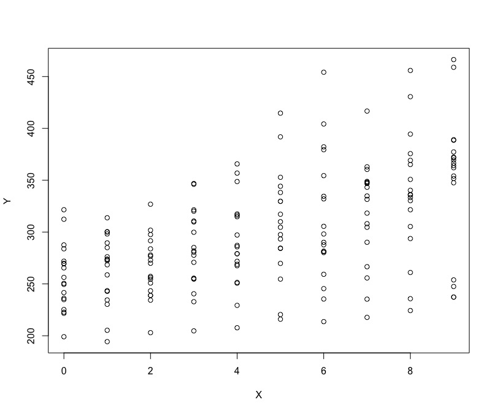
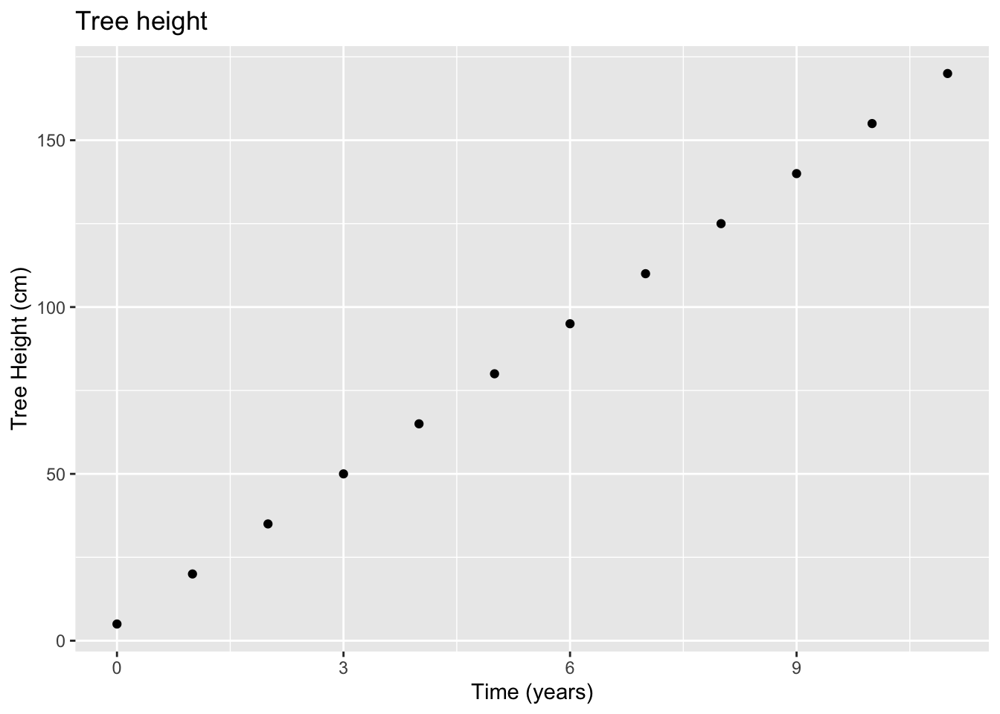
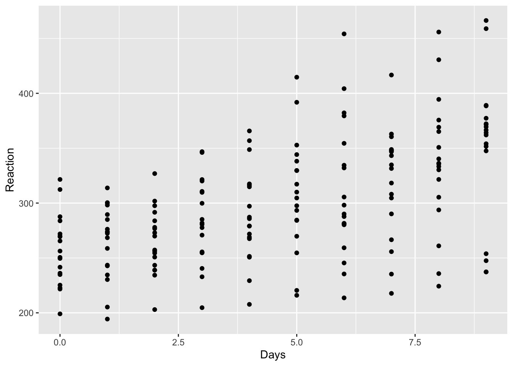
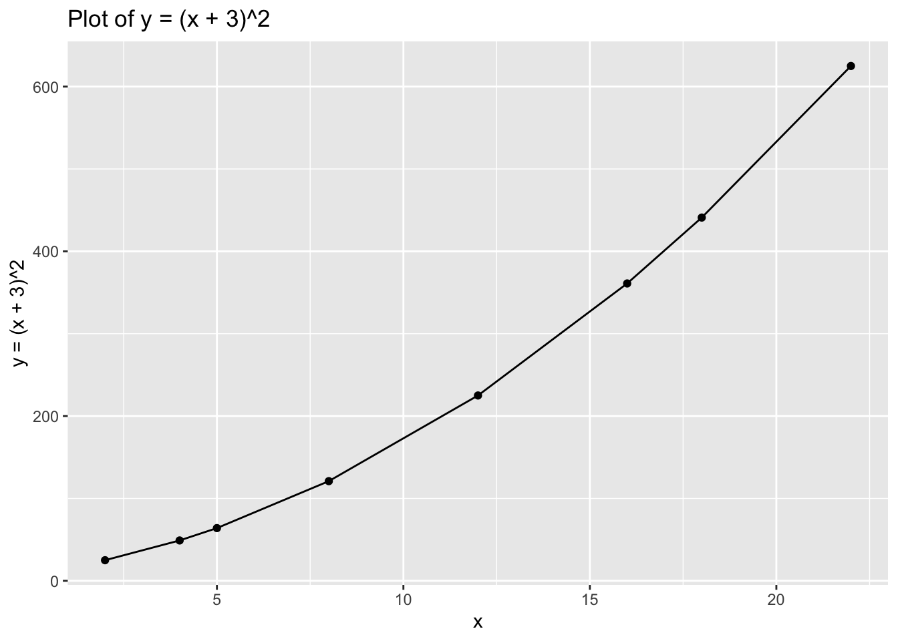
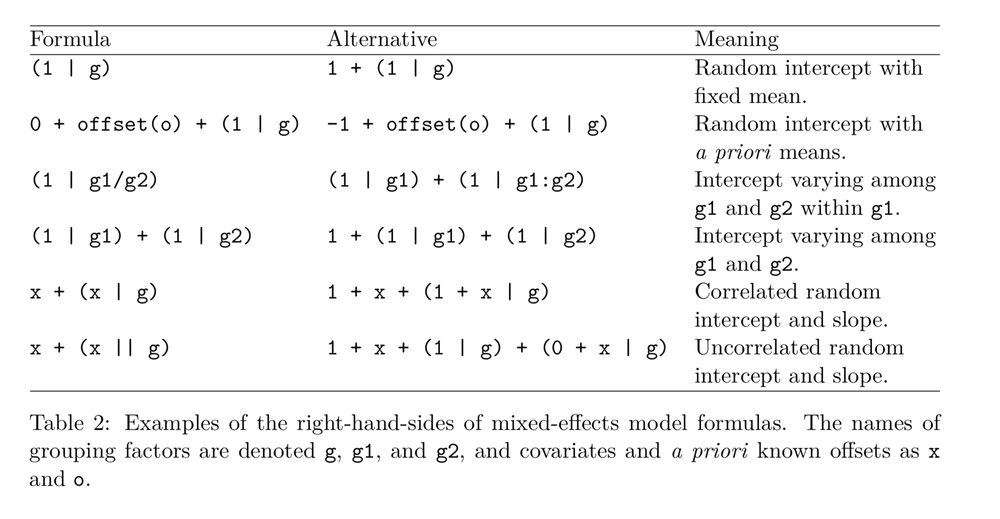

Chapter 4 Simple Linear Model and Mixed Methods
Note: this section is partially adapted from Fox’s Linear Mixed Models and Bates et al (2015) . We will first focus on simple linear model, we extend it to fixed effect model, finally we discuss random effects modelling. We will also use the data from study of Belenky et al (2003). This is pretty famous dataset that is easy to find online and you may find some help on it easily as many people are using it either to teach or to learn about mixed effects.
4.1 Data sets
Some of the data that we will use today is available via respective packages. All the additional data sets can be found here.
4.2 Longitudinal Data
We have seen quite a few examples of linear models last week, let us now finally get to the ones you probably came here to learn more about. The world can be slightly more complex of course than traditional set up of linear models. Things change in time and they change differently for different units of analysis (i.e. participants). We want to control for the variation in this change when making claims about casual relationship we find using data. In psychology and linguistics research, especially, you often find that you will have some repeated measures of your variable of interest for participants (i.e. memory after performing certain tests, reaction scores, attitudes, etc). These are related either to multiple treatments given to participants or/and arise from measuring the same relationships at different time points.
Remember old model set up: \[\begin{equation} Y_[i] = \beta_0 + \beta_1 * X_i + \epsilon_i \end{equation}\]
And remember the assumptions that are required for the linear model. Can you recall those for the residual term? Once in repeated measures setting you will see that most of these will remain. As in the simple linear model, we do care most about our residual term. We want it to be random and normally distributed with zero mean. The main reason for that of course is the fact that we want our model to explain all the meaningful variations without leaving anything in the residual term.
The only difference we have now is the we want to control for each individual unobserved characteristics so we introduce extra parameter which will account for those.
\[\begin{equation} Y_[i] = \beta_0 + \beta_1 * X_i + \alpha + \epsilon_i \end{equation}\]
This is the fixed effect model.
We can also introduce further parameters that will allow us to include effects at individual levels (i.e. pupils) and at the entity levels (i.e.schools)
\[\begin{equation} Y_[i] = \beta_0 + \beta_1 * X_i + \theta_i + \gamma_ij + \epsilon_i \end{equation}\]
4.3 Why a new model?
The reason why we are introducing a new model for repeated measures data or data that has few levels is the consideration of Ecological fallacy. What do we mean by that is that there may be differences across the effects on the levels of units compared to that on individual levels. Lets look at the example based on some data. Below, I have a generic plot of data points that illustrates the corresponding values of Y for each unit of some variable X.
Do you think we have positive relationship or negative? Is it easy to tell what is happening?

I think its hard to tell! Let us look at something a bit more specific.
4.4 Ecological Fallacy (quick illustration) - no need to run
Lets get some data in and load lmer package:
library(lme4)
disease<-read.csv('disease.csv')4.5 Simple Example
We would like to study the relationship between prevalence of deadly diseases and average income per cities. We will run three models but first let’s provide a simple visualisation of the data:
#Make sure you have ggplot2
library(ggplot2)
qplot(disease$Income, disease$HDisease, xlab='Income', ylab='Disease')
Looks like we are dealing with quite positive relationship. Lets get to the models:
#Not controlling for city
model_0 <- lm(HDisease~Income, data = disease)
#Controlling for city effects
model_1 <- lm(HDisease~Income+factor(City), data = disease)
#Controlling for city and across cities effects
model_2 <- lmer(HDisease~Income + (1 | City), data = disease)We can compare the outputs:
#Produce tidy outputs using texreg
library(texreg)
screenreg(list(model_0, model_1, model_2))##
## =========================================================
## Model 1 Model 2 Model 3
## ---------------------------------------------------------
## (Intercept) 1.65 *** 3.07 *** 16.41 ***
## (0.27) (0.11) (2.87)
## Income 1.95 *** -0.99 *** -0.98 ***
## (0.05) (0.07) (0.07)
## factor(City)2 2.88 ***
## (0.16)
## factor(City)3 5.96 ***
## (0.21)
## factor(City)4 8.91 ***
## (0.26)
## factor(City)5 12.06 ***
## (0.33)
## factor(City)6 14.89 ***
## (0.40)
## factor(City)7 17.78 ***
## (0.47)
## factor(City)8 20.90 ***
## (0.54)
## factor(City)9 23.86 ***
## (0.59)
## factor(City)10 26.93 ***
## (0.68)
## ---------------------------------------------------------
## R^2 0.95 1.00
## Adj. R^2 0.95 1.00
## Num. obs. 100 100 100
## RMSE 1.34 0.32
## AIC 148.61
## BIC 159.03
## Log Likelihood -70.31
## Num. groups: City 10
## Var: City (Intercept) 81.14
## Var: Residual 0.10
## =========================================================
## *** p < 0.001, ** p < 0.01, * p < 0.054.6 Now for Advanced: Model set up
The previous example was something known as toy example. We can use some real data examples now.
Lets load all the packages we will need.
#Load neccesary packages
library(lattice)
library(arm)There will be two main illustration we want to focus on. First one will consider clustering of temporal variation by unit of analysis (i.e. participant) and the second one will consider clustering of units by group (i.e. school).
For the first example, we will use the data on sleep deprivation. The example is based on Belenky et al(2003) study that looks at patterns of sleeping across individuals that are going through the stages of sleep deprivation. On day 0 the subjects had their normal amount of sleep. Starting that night they were restricted to 3 hours of sleep per night. The observations represent the average reaction time on a series of tests given each day to each subject.
#Read data in
sleep<-read.csv('sleep.csv')#Check whats in
str(sleep)## 'data.frame': 180 obs. of 4 variables:
## $ X : int 1 2 3 4 5 6 7 8 9 10 ...
## $ Reaction: num 250 259 251 321 357 ...
## $ Days : int 0 1 2 3 4 5 6 7 8 9 ...
## $ Subject : int 308 308 308 308 308 308 308 308 308 308 ...Let us just plot the data as it is. We will use Days as our X, and Reaction as our Y. You will recognize something we just have seen.
#Plot reaction dynamics across days
qplot(sleep$Days, sleep$Reaction, xlab='Days', ylab='Reaction')
It is hard to tell whether there is a positive effect or whether there may be different levels of effect. It is clear that there is some tendency for increasing reaction as time passes but we have various individuals we may find that on individual levels we may observe a more detailed picture.
We can use xy plot() to plot the variation of reaction time for the test which were given to participants across ten days of the recovery.
To check arguments that can be modified have a look here.
xyplot(Reaction ~ Days|Subject, sleep, type = c("g","p","r"), #we are mixing the types of plots here, try removing the option
index = function(x,y) coef(lm(y ~ x))[1], #we specify that we are plotting x and y using lm() fit
xlab = "Days of sleep deprivation",
ylab = "Average reaction time (ms)", aspect = "xy")
What do you see? It looks like for some individuals there were pretty fast changes in the reactions times across periods with some having a steady growth in reaction level. Mostly we observe upwards movement but the speed seems to vary so as the starting points.
Note how in the plots I included the variables Days|Subject, sleep. This helps to identify that we are looking at the effect of time for each subject’s sleep variable.
Let us now see what we will observe numerically if we were to run a model to fit this data.
4.6.1 Pooling
We can start with simple model, this is also know as complete polling, we assume that effects of variable Day were the same for everyone. Just like in simple linear model.
#Lets regress reactions on days
model_simple<-lm(Reaction~Days, sleep)
summary(model_simple)##
## Call:
## lm(formula = Reaction ~ Days, data = sleep)
##
## Residuals:
## Min 1Q Median 3Q Max
## -110.848 -27.483 1.546 26.142 139.953
##
## Coefficients:
## Estimate Std. Error t value Pr(>|t|)
## (Intercept) 251.405 6.610 38.033 < 2e-16 ***
## Days 10.467 1.238 8.454 9.89e-15 ***
## ---
## Signif. codes: 0 '***' 0.001 '**' 0.01 '*' 0.05 '.' 0.1 ' ' 1
##
## Residual standard error: 47.71 on 178 degrees of freedom
## Multiple R-squared: 0.2865, Adjusted R-squared: 0.2825
## F-statistic: 71.46 on 1 and 178 DF, p-value: 9.894e-154.6.2 No pooling
Some may say that it will be quite naive to put all together as we have some variability within each individual records that we do not account. Alternatively, we can attempt to control for each subject, this is known as fixed effect and is equivalent to having a dummy variable for each of the individuals. That way we can ensure that we separate the variation that is due to individuals unique characteristics. Here is an example:
#Lets regress reactions on days but now control for indviduals via including 'Subject'.
model_subject<-lm(Reaction~Days+as.factor(Subject), sleep)
summary(model_subject)##
## Call:
## lm(formula = Reaction ~ Days + as.factor(Subject), data = sleep)
##
## Residuals:
## Min 1Q Median 3Q Max
## -100.540 -16.389 -0.341 15.215 131.159
##
## Coefficients:
## Estimate Std. Error t value Pr(>|t|)
## (Intercept) 295.0310 10.4471 28.240 < 2e-16 ***
## Days 10.4673 0.8042 13.015 < 2e-16 ***
## as.factor(Subject)309 -126.9008 13.8597 -9.156 2.35e-16 ***
## as.factor(Subject)310 -111.1326 13.8597 -8.018 2.07e-13 ***
## as.factor(Subject)330 -38.9124 13.8597 -2.808 0.005609 **
## as.factor(Subject)331 -32.6978 13.8597 -2.359 0.019514 *
## as.factor(Subject)332 -34.8318 13.8597 -2.513 0.012949 *
## as.factor(Subject)333 -25.9755 13.8597 -1.874 0.062718 .
## as.factor(Subject)334 -46.8318 13.8597 -3.379 0.000913 ***
## as.factor(Subject)335 -92.0638 13.8597 -6.643 4.51e-10 ***
## as.factor(Subject)337 33.5872 13.8597 2.423 0.016486 *
## as.factor(Subject)349 -66.2994 13.8597 -4.784 3.87e-06 ***
## as.factor(Subject)350 -28.5311 13.8597 -2.059 0.041147 *
## as.factor(Subject)351 -52.0361 13.8597 -3.754 0.000242 ***
## as.factor(Subject)352 -4.7123 13.8597 -0.340 0.734300
## as.factor(Subject)369 -36.0992 13.8597 -2.605 0.010059 *
## as.factor(Subject)370 -50.4321 13.8597 -3.639 0.000369 ***
## as.factor(Subject)371 -47.1498 13.8597 -3.402 0.000844 ***
## as.factor(Subject)372 -24.2477 13.8597 -1.750 0.082108 .
## ---
## Signif. codes: 0 '***' 0.001 '**' 0.01 '*' 0.05 '.' 0.1 ' ' 1
##
## Residual standard error: 30.99 on 161 degrees of freedom
## Multiple R-squared: 0.7277, Adjusted R-squared: 0.6973
## F-statistic: 23.91 on 18 and 161 DF, p-value: < 2.2e-16We have got some improvement in terms of explain variance (check Adjusted R-squared).
We can test whether controlling for each individual variation improves on a simple model as well. An F test is here to help since we have nested models:
#F test
anova(model_simple, model_subject)## Analysis of Variance Table
##
## Model 1: Reaction ~ Days
## Model 2: Reaction ~ Days + as.factor(Subject)
## Res.Df RSS Df Sum of Sq F Pr(>F)
## 1 178 405252
## 2 161 154634 17 250618 15.349 < 2.2e-16 ***
## ---
## Signif. codes: 0 '***' 0.001 '**' 0.01 '*' 0.05 '.' 0.1 ' ' 1Not bad! Guess we can stop here? We can think for a moment…
Quick note: in the structure above we do not consider anything with regards to between units variation, we are looking at what happening within individuals reaction scores but do not account how they vary between each other
4.6.3 Partial Pooling (varying intercepts)
An attempt do a bit of both (partial pooling) can be using random effect modelling structure. Such model will first look at the variation between individuals and then measure their distance from average individual effect, so we are partially pooling everyone together. Please note that we are assuming the slopes are the same, it is the intercepts that will vary for each person.
There are quite a few variations of mixed methods specifications. A useful table was found in Bates et al (2015):

#Run baseline model (will use it later for comparison, we have no controls)
model_null <- lmer(Reaction ~ (1|Subject), # note how we use 1 to suggest that that we keep the slope constant and vary intercept
data=sleep)
#Run the model (note thay we also control for the effect of time by subject)
model_mix <- lmer(Reaction ~ Days + (1|Subject) , sleep)
#Summarise
summary(model_mix)## Linear mixed model fit by REML ['lmerMod']
## Formula: Reaction ~ Days + (1 | Subject)
## Data: sleep
##
## REML criterion at convergence: 1786.5
##
## Scaled residuals:
## Min 1Q Median 3Q Max
## -3.2257 -0.5529 0.0109 0.5188 4.2506
##
## Random effects:
## Groups Name Variance Std.Dev.
## Subject (Intercept) 1378.2 37.12
## Residual 960.5 30.99
## Number of obs: 180, groups: Subject, 18
##
## Fixed effects:
## Estimate Std. Error t value
## (Intercept) 251.4051 9.7467 25.79
## Days 10.4673 0.8042 13.02
##
## Correlation of Fixed Effects:
## (Intr)
## Days -0.371Double check that the intercept for fixed effect is identical to the one we found earlier when we controlled for the subject. The coefficient for ‘Days’ reports the average effect of an extra day of sleep deprivation on reaction score.
Lets get to a bit more compressed output:
#Use display()
display(model_mix)## lmer(formula = Reaction ~ Days + (1 | Subject), data = sleep)
## coef.est coef.se
## (Intercept) 251.41 9.75
## Days 10.47 0.80
##
## Error terms:
## Groups Name Std.Dev.
## Subject (Intercept) 37.12
## Residual 30.99
## ---
## number of obs: 180, groups: Subject, 18
## AIC = 1794.5, DIC = 1801.7
## deviance = 1794.1We can extract fixed effect estimation:
#fixef () wil take fixed effect out for us
fixef(model_mix) ## (Intercept) Days
## 251.40510 10.46729#se.fixef() wil take he standard error of the fixed effect
se.fixef(model_mix)## (Intercept) Days
## 9.7467163 0.8042214Or random effect:
#ranef () wil take random effect out for us
ranef(model_mix)## $Subject
## (Intercept)
## 308 40.783710
## 309 -77.849554
## 310 -63.108567
## 330 4.406442
## 331 10.216189
## 332 8.221238
## 333 16.500494
## 334 -2.996981
## 335 -45.282127
## 337 72.182686
## 349 -21.196249
## 350 14.111363
## 351 -7.862221
## 352 36.378425
## 369 7.036381
## 370 -6.362703
## 371 -3.294273
## 372 18.115747
##
## with conditional variances for "Subject"#se.ranef() wil take he standard error of the fixed effect
se.ranef(model_mix)## $Subject
## (Intercept)
## 308 9.475668
## 309 9.475668
## 310 9.475668
## 330 9.475668
## 331 9.475668
## 332 9.475668
## 333 9.475668
## 334 9.475668
## 335 9.475668
## 337 9.475668
## 349 9.475668
## 350 9.475668
## 351 9.475668
## 352 9.475668
## 369 9.475668
## 370 9.475668
## 371 9.475668
## 372 9.475668#We can also just get the predicted intercept + slope for each ( fixef() plus the value of ranef())
coef(model_mix)## $Subject
## (Intercept) Days
## 308 292.1888 10.46729
## 309 173.5556 10.46729
## 310 188.2965 10.46729
## 330 255.8115 10.46729
## 331 261.6213 10.46729
## 332 259.6263 10.46729
## 333 267.9056 10.46729
## 334 248.4081 10.46729
## 335 206.1230 10.46729
## 337 323.5878 10.46729
## 349 230.2089 10.46729
## 350 265.5165 10.46729
## 351 243.5429 10.46729
## 352 287.7835 10.46729
## 369 258.4415 10.46729
## 370 245.0424 10.46729
## 371 248.1108 10.46729
## 372 269.5209 10.46729
##
## attr(,"class")
## [1] "coef.mer"4.6.4 Partial Pooling Extended - (varying intercepts and/or slopes)
We can also vary slopes if we wanted to, we saw earlier that we may have very different line fit for the reaction time for different individuals.
#Run the model (note thay we also control for the effect of time by subject)
model_mix_slope <- lmer(Reaction ~ Days + (Days|Subject), # note that now 1 was replaced with Days to suggest varying slopes
sleep)
#Summarise
summary(model_mix_slope)## Linear mixed model fit by REML ['lmerMod']
## Formula: Reaction ~ Days + (Days | Subject)
## Data: sleep
##
## REML criterion at convergence: 1743.6
##
## Scaled residuals:
## Min 1Q Median 3Q Max
## -3.9536 -0.4634 0.0231 0.4633 5.1793
##
## Random effects:
## Groups Name Variance Std.Dev. Corr
## Subject (Intercept) 611.90 24.737
## Days 35.08 5.923 0.07
## Residual 654.94 25.592
## Number of obs: 180, groups: Subject, 18
##
## Fixed effects:
## Estimate Std. Error t value
## (Intercept) 251.405 6.824 36.843
## Days 10.467 1.546 6.771
##
## Correlation of Fixed Effects:
## (Intr)
## Days -0.138Each subject now will have their own slope estimation, which is as the intercept is partially pooled towards the center of Days effects’ distribution. Note carefully the results for Days coefficients in the main output.
Whatever decision you make, it will always be driven by your data. You may want to do the model comparison exercises and analyse the residuals in model output to see how much varying intercepts/slopes improved your understanding of underlying relationships in your data.
In mixed model setting, we can use log-likelihood ratio test to compare the models we just built:
#Make sure lmtest is loaded
library(lmtest)#Compare the null model with random intercept model using likelihood ratio test
lrtest(model_null,model_mix)## Likelihood ratio test
##
## Model 1: Reaction ~ (1 | Subject)
## Model 2: Reaction ~ Days + (1 | Subject)
## #Df LogLik Df Chisq Pr(>Chisq)
## 1 3 -952.16
## 2 4 -893.23 1 117.86 < 2.2e-16 ***
## ---
## Signif. codes: 0 '***' 0.001 '**' 0.01 '*' 0.05 '.' 0.1 ' ' 1Note how we add incrementally each model to the test:
#Now also compare varying intercept with both varying interecept + slopes
lrtest(model_mix, model_mix_slope)## Likelihood ratio test
##
## Model 1: Reaction ~ Days + (1 | Subject)
## Model 2: Reaction ~ Days + (Days | Subject)
## #Df LogLik Df Chisq Pr(>Chisq)
## 1 4 -893.23
## 2 6 -871.81 2 42.837 4.99e-10 ***
## ---
## Signif. codes: 0 '***' 0.001 '**' 0.01 '*' 0.05 '.' 0.1 ' ' 1The model with random intercept improves on over null model. Having a random slope and intercept improved the model even more. Anything else to add for your results write up?
We can also use something which is known pseudo R-squared to see how much variance was explained due to our explanatory factor. We will need to calculate it by hand. We will use our model without controls where were have random intercepts and we will add Days to compare the explained variation that is due to addition of explanatory factors. Just a reminder of the models we need:
#Null-baseline
model_null <- lmer(Reaction ~ (1|Subject) , sleep)
#Extended-Days
model_mix <- lmer(Reaction ~ Days + (1|Subject) , sleep)Let us extract the variance:
## We can try to extract the partial variance that was explained by Days for mixed model
#Calculate variance for the null
totvar_model_null <- (summary(model_null)$sigma)^2 +
as.numeric(summary(model_null)$varcor)
#Calculate variance for the mixed
totvar_model_mix <- (summary(model_mix)$sigma)^2 + as.numeric(summary(model_mix)$varcor)
#Check the ratio of the difference between the too overall total variance in null
Var_expl <-(totvar_model_null-totvar_model_mix)/totvar_model_null
Var_expl## [1] 0.2775756We find that about 28% of variation in reaction can be explained by time, when controlling for subjects.
Lets finally put all these models side by side using texreg(). We can check what our main coefficients are, likelihood and also export if for the paper if we want to
#Make sure to have textreg loaded
library(texreg)And now put the main models that we were working with for the overall comparison. Note, how tidy the output looks and we can now focus specifically on the effect of Days.
screenreg(list(model_null, model_mix))##
## ==================================================
## Model 1 Model 2
## --------------------------------------------------
## (Intercept) 298.51 *** 251.41 ***
## (9.05) (9.75)
## Days 10.47 ***
## (0.80)
## --------------------------------------------------
## AIC 1910.33 1794.47
## BIC 1919.91 1807.24
## Log Likelihood -952.16 -893.23
## Num. obs. 180 180
## Num. groups: Subject 18 18
## Var: Subject (Intercept) 1278.34 1378.18
## Var: Residual 1958.87 960.46
## ==================================================
## *** p < 0.001, ** p < 0.01, * p < 0.054.7 Multilevel modelling with random intercepts and slopes
Let’s consider another example, we can now try to fit similar models to a structure with levels that are represented by groups. Previously we had participant level variability. But what if we had participant levels that we were further grouped by other variable (i.e. country of birth, cohort, study trial)?
We can use mixed models as well. A very common way to illustrate the example would be using students grades across schools that vary within the pupils at the school level but also vary across schools. This is relevant in cases where grades were measured at different times as well. Let us work through something which is a bit more meaningful.
For example studies that look at this closely have a look at this review paper. The data set that we will work with has information on IQ scores for school students and is taken from Snijders and Bosker (2012) textbook. We will have different levels here, variability of grades within the schools and across the schools. What we want to understand is whether the average score on language test has anything to do with scores that student get in their SES and IQ and the scores at the average school level.
4.7.1 Overview of the data set
| variable | description |
|---|---|
| school | School id |
| pupil | Student id |
| lang_score | language score |
| ses | Socioeconomic status of the student (mean centered) |
| IQ_verb | Verbal IQ of the student (mean centered) |
| sex | Gender of the student |
| Minority | Dummy indicator of whether student is of minority background |
| sch_ses | Average SES in a school (mean centered) |
| sch_iqv | Average verbal IQ in a school (mean centered) |
| sch_min | Proportion of minority students in a school |
4.7.2 Prepare
Before we start let us load all the packages we will need later.
library(nlme)
library(lattice)#Read data in:
schools<-read.csv('schools.csv')
head(schools)## school pupil lang_score ses IQ_verb sex Minority sch_ses sch_iqv
## 1 1 3 46 -4.73 3.13 0 0 -14.035 -1.4039
## 2 1 4 45 -17.73 2.63 0 1 -14.035 -1.4039
## 3 1 5 33 -12.73 -2.37 0 0 -14.035 -1.4039
## 4 1 6 46 -4.73 -0.87 0 0 -14.035 -1.4039
## 5 1 7 20 -17.73 -3.87 0 0 -14.035 -1.4039
## 6 1 8 30 -17.73 -2.37 0 1 -14.035 -1.4039
## sch_min
## 1 0.63
## 2 0.63
## 3 0.63
## 4 0.63
## 5 0.63
## 6 0.63Let us first build a simple mixed effect model, we will try to predict language scores and will control for the schoo level only:
#Simple model (account for school level)
model_schools_0 <- lmer(lang_score ~ (1|school), data = schools)
summary(model_schools_0)## Linear mixed model fit by REML ['lmerMod']
## Formula: lang_score ~ (1 | school)
## Data: schools
##
## REML criterion at convergence: 26595.7
##
## Scaled residuals:
## Min 1Q Median 3Q Max
## -4.1850 -0.6417 0.0905 0.7226 2.5281
##
## Random effects:
## Groups Name Variance Std.Dev.
## school (Intercept) 18.24 4.271
## Residual 62.85 7.928
## Number of obs: 3758, groups: school, 211
##
## Fixed effects:
## Estimate Std. Error t value
## (Intercept) 41.0038 0.3257 125.9We can also set up a NULL model, explained variance of which we will use to calculate pseudo R squared later:
#NUll model - constant intercept
model_schools_null<- lm(lang_score ~1, data = schools)
summary(model_schools_null)##
## Call:
## lm(formula = lang_score ~ 1, data = schools)
##
## Residuals:
## Min 1Q Median 3Q Max
## -33.413 -5.413 0.587 6.587 16.587
##
## Coefficients:
## Estimate Std. Error t value Pr(>|t|)
## (Intercept) 41.4130 0.1451 285.5 <2e-16 ***
## ---
## Signif. codes: 0 '***' 0.001 '**' 0.01 '*' 0.05 '.' 0.1 ' ' 1
##
## Residual standard error: 8.893 on 3757 degrees of freedomWe can quickly check whether having varying intercepts improves over having a constant one for each student:
#Log-likelihood ratio test ( null versus control)
lrtest(model_schools_null,model_schools_0)## Likelihood ratio test
##
## Model 1: lang_score ~ 1
## Model 2: lang_score ~ (1 | school)
## #Df LogLik Df Chisq Pr(>Chisq)
## 1 2 -13544
## 2 3 -13298 1 492.54 < 2.2e-16 ***
## ---
## Signif. codes: 0 '***' 0.001 '**' 0.01 '*' 0.05 '.' 0.1 ' ' 1Lets start adding a few relevant covariates, we can start with IQ and then see how much additional variance can be explained by this variable:
#Add IQ scores to the model
model_schools_IQ <- lmer(lang_score ~ IQ_verb + (1|school), data = schools)
summary(model_schools_IQ)## Linear mixed model fit by REML ['lmerMod']
## Formula: lang_score ~ IQ_verb + (1 | school)
## Data: schools
##
## REML criterion at convergence: 24917.1
##
## Scaled residuals:
## Min 1Q Median 3Q Max
## -4.1952 -0.6378 0.0659 0.7098 3.2132
##
## Random effects:
## Groups Name Variance Std.Dev.
## school (Intercept) 9.909 3.148
## Residual 40.479 6.362
## Number of obs: 3758, groups: school, 211
##
## Fixed effects:
## Estimate Std. Error t value
## (Intercept) 41.05442 0.24402 168.24
## IQ_verb 2.50722 0.05439 46.09
##
## Correlation of Fixed Effects:
## (Intr)
## IQ_verb 0.003Lets calculate variance of empty model, then with IQ so we can see the added contribution from a new covariate:
#Extract the variances:
totvar_model_0 <- (summary(model_schools_0)$sigma)^2 + as.numeric(summary(model_schools_0)$varcor)
totvar_model_IQ <- (summary(model_schools_IQ)$sigma)^2 + as.numeric(summary(model_schools_IQ)$varcor)
# Proportion of variance explained by IQ:
Rsq_IQ <- (totvar_model_0 - totvar_model_IQ)/totvar_model_0
Rsq_IQ## [1] 0.3786057There are other ways to access model fit in more standard way. Remember that the mixed effect model is fit via MLE. We can stil however built an equivalent of R sqaured measure that is based on the ratio of two log likelihoods, There is a package for that too:
library(MuMIn)## Registered S3 method overwritten by 'MuMIn':
## method from
## predict.merMod lme4r.squaredGLMM(model_schools_IQ)## Warning: 'r.squaredGLMM' now calculates a revised statistic. See the help
## page.## R2m R2c
## [1,] 0.3419141 0.4713251We will get two outputs: R squared (marginal): 0.3423 and R sqaured (condiftional): 0.471, the former being the one that comes from accounting for fixed effect only and latter comes via combination of both random and fixed.
On top of that, we can also make assessment of intraclass correlation (ICC), this will allow us to investigate whether there are systematic similarities in grades within the schools. ICC is quite useful measure and can be also used to diagnose your models. If there is a very strong correlation between the units within the group or a really weak one - both may require attention.
Lets get one for our first model:
#ICC for our first model (by hand)
ICC_0 <- as.numeric(summary(model_schools_0)$varcor)/((summary(model_schools_0)$sigma)^2 + as.numeric(summary(model_schools_0)$varcor))
ICC_0## [1] 0.2249341This tell us that about 22 percent of variation in language scores is at the school level. This can also be stated as the following: if we picked randomly two students that belong to the same school, we would expect about 0.22 correlation in their language scores.
## ICC from the model with IQ (by hand)
ICC_IQ<-as.numeric(summary(model_schools_IQ)$varcor)/((summary(model_schools_IQ)$sigma)^2 + as.numeric(summary(model_schools_IQ)$varcor))
ICC_IQ## [1] 0.1966476Or via direct function from the package sjstats
library(sjstats)
icc(model_schools_0)## # Intraclass Correlation Coefficient
##
## Adjusted ICC: 0.225
## Conditional ICC: 0.225icc(model_schools_IQ)## # Intraclass Correlation Coefficient
##
## Adjusted ICC: 0.197
## Conditional ICC: 0.129We dropped to around 0.2 now (see Adjusted), this tell us that once we look at the similarity of IQ scores at the school level, the correlation between the scores obtained on lang_score can be explained by similarities in IQ scores within the school.
Quikc note:there is a slight differnce between an adjusted and conditional ICC . Former takes take all sources of uncertainty ( all random effects) into account, including the conditional ICC (fixed effects)
Finally, lets now add the schools average scores dynamic to our model:
#Add schools averages in
model_schools_IQ_sc <- lmer(lang_score ~ IQ_verb + sch_iqv + (1|school), data = schools)
summary(model_schools_IQ_sc)## Linear mixed model fit by REML ['lmerMod']
## Formula: lang_score ~ IQ_verb + sch_iqv + (1 | school)
## Data: schools
##
## REML criterion at convergence: 24893.9
##
## Scaled residuals:
## Min 1Q Median 3Q Max
## -4.2201 -0.6399 0.0631 0.7054 3.2173
##
## Random effects:
## Groups Name Variance Std.Dev.
## school (Intercept) 8.785 2.964
## Residual 40.442 6.359
## Number of obs: 3758, groups: school, 211
##
## Fixed effects:
## Estimate Std. Error t value
## (Intercept) 41.1132 0.2329 176.526
## IQ_verb 2.4536 0.0555 44.212
## sch_iqv 1.3127 0.2627 4.997
##
## Correlation of Fixed Effects:
## (Intr) IQ_vrb
## IQ_verb -0.007
## sch_iqv 0.043 -0.209Try to get ICC and R squared by yourself here. You will find that controlling for average IQ in the school will improve model as well. We can thus incorporate the school levels on top of individual level of the final model and perform a likelihood ratio test.
#Finally: we would like to control for effect of IQ at school level
model_school_final <- lmer(lang_score ~ IQ_verb + sch_iqv + (1+IQ_verb|school), #note how we control for IQ here to specify that we have random intercept, individual and group level predictor)
data = schools)
summary(model_school_final)## Linear mixed model fit by REML ['lmerMod']
## Formula: lang_score ~ IQ_verb + sch_iqv + (1 + IQ_verb | school)
## Data: schools
##
## REML criterion at convergence: 24870.5
##
## Scaled residuals:
## Min 1Q Median 3Q Max
## -4.2604 -0.6337 0.0676 0.7035 2.7622
##
## Random effects:
## Groups Name Variance Std.Dev. Corr
## school (Intercept) 8.9787 2.9964
## IQ_verb 0.1995 0.4466 -0.63
## Residual 39.6858 6.2997
## Number of obs: 3758, groups: school, 211
##
## Fixed effects:
## Estimate Std. Error t value
## (Intercept) 41.1275 0.2347 175.248
## IQ_verb 2.4802 0.0645 38.453
## sch_iqv 1.0305 0.2633 3.913
##
## Correlation of Fixed Effects:
## (Intr) IQ_vrb
## IQ_verb -0.279
## sch_iqv -0.002 -0.187
## convergence code: 0
## Model failed to converge with max|grad| = 0.00224192 (tol = 0.002, component 1)lrtest(model_schools_IQ_sc, model_school_final)## Likelihood ratio test
##
## Model 1: lang_score ~ IQ_verb + sch_iqv + (1 | school)
## Model 2: lang_score ~ IQ_verb + sch_iqv + (1 + IQ_verb | school)
## #Df LogLik Df Chisq Pr(>Chisq)
## 1 5 -12447
## 2 7 -12435 2 23.394 8.32e-06 ***
## ---
## Signif. codes: 0 '***' 0.001 '**' 0.01 '*' 0.05 '.' 0.1 ' ' 1Finally, as usual by now, lets put everything side by side:
#Lest all the models together for comparison
screenreg(list(model_schools_0, model_schools_IQ, model_schools_IQ_sc, model_school_final))##
## ===========================================================================================
## Model 1 Model 2 Model 3 Model 4
## -------------------------------------------------------------------------------------------
## (Intercept) 41.00 *** 41.05 *** 41.11 *** 41.13 ***
## (0.33) (0.24) (0.23) (0.23)
## IQ_verb 2.51 *** 2.45 *** 2.48 ***
## (0.05) (0.06) (0.06)
## sch_iqv 1.31 *** 1.03 ***
## (0.26) (0.26)
## -------------------------------------------------------------------------------------------
## AIC 26601.69 24925.14 24903.93 24884.54
## BIC 26620.38 24950.07 24935.09 24928.16
## Log Likelihood -13297.84 -12458.57 -12446.97 -12435.27
## Num. obs. 3758 3758 3758 3758
## Num. groups: school 211 211 211 211
## Var: school (Intercept) 18.24 9.91 8.78 8.98
## Var: Residual 62.85 40.48 40.44 39.69
## Var: school IQ_verb 0.20
## Cov: school (Intercept) IQ_verb -0.84
## ===========================================================================================
## *** p < 0.001, ** p < 0.01, * p < 0.05Looking now at various combinations, which one you think makes most sense both statistically and substantively?
4.8 Random slopes, intercepts and cross level interactions (optional)
For this part we will use the dataset taken from Hox’s (2010) textbook on multilevel modelling. The dataset includes the following variables:
| variable | description |
|---|---|
| PUPIL | pupil id within class |
| CLASS | class id (1,…,100) |
| POPULAR | popularity score of the student |
| SEX | sex of the student (0=male, 1=female) |
| T.EXP | years of experience of the teacher |
| FEMALE | student is FEMALE |
#Lets read the data in
popularity<-read.csv('Popularity.csv')We will go on straight to building our models, starting with null once again for later comparison.
#Usual set up of the null and simple model controlling for the group
model_null <- lm(POPULAR ~ 1, data = popularity)
model_pop_0 <- lmer(POPULAR ~ (1|CLASS), data = popularity)
summary(model_pop_0)## Linear mixed model fit by REML ['lmerMod']
## Formula: POPULAR ~ (1 | CLASS)
## Data: popularity
##
## REML criterion at convergence: 5115.6
##
## Scaled residuals:
## Min 1Q Median 3Q Max
## -2.88825 -0.63376 -0.05155 0.71091 3.00393
##
## Random effects:
## Groups Name Variance Std.Dev.
## CLASS (Intercept) 0.8798 0.9380
## Residual 0.6387 0.7992
## Number of obs: 2000, groups: CLASS, 100
##
## Fixed effects:
## Estimate Std. Error t value
## (Intercept) 5.3076 0.0955 55.58Test whether random intercepts is an improvement:
#Quick model comprison
lrtest(model_pop_0,model_null)## Likelihood ratio test
##
## Model 1: POPULAR ~ (1 | CLASS)
## Model 2: POPULAR ~ 1
## #Df LogLik Df Chisq Pr(>Chisq)
## 1 3 -2557.8
## 2 2 -3244.8 -1 1373.9 < 2.2e-16 ***
## ---
## Signif. codes: 0 '***' 0.001 '**' 0.01 '*' 0.05 '.' 0.1 ' ' 1Lets see whether gender has anything to do with popularity:
#Adding an extra covariate
model_pop_sex <- lmer(POPULAR ~ FEMALE+(1|CLASS), data = popularity)
summary(model_pop_sex)## Linear mixed model fit by REML ['lmerMod']
## Formula: POPULAR ~ FEMALE + (1 | CLASS)
## Data: popularity
##
## REML criterion at convergence: 4492.9
##
## Scaled residuals:
## Min 1Q Median 3Q Max
## -3.3184 -0.6892 0.0018 0.5961 3.8239
##
## Random effects:
## Groups Name Variance Std.Dev.
## CLASS (Intercept) 0.8622 0.9286
## Residual 0.4599 0.6782
## Number of obs: 2000, groups: CLASS, 100
##
## Fixed effects:
## Estimate Std. Error t value
## (Intercept) 4.89722 0.09530 51.39
## FEMALETRUE 0.84370 0.03096 27.25
##
## Correlation of Fixed Effects:
## (Intr)
## FEMALETRUE -0.158And how the variable affects our values of R-squared:
## Pseudo R squared:
totvar_mod_pop_0 <- (summary(model_pop_0)$sigma)^2 + as.numeric(summary(model_pop_0)$varcor)
totvar_mod_pop_sex <- (summary(model_pop_sex)$sigma)^2 + as.numeric(summary(model_pop_sex)$varcor)
R_sq_pop <- (totvar_mod_pop_0 - totvar_mod_pop_sex)/totvar_mod_pop_0
R_sq_pop## [1] 0.1293066What about ICC?
#Again either by hand
as.numeric(summary(model_pop_sex)$varcor)/((summary(model_pop_sex)$sigma)^2 + as.numeric(summary(model_pop_sex)$varcor))## [1] 0.652142Anything else which can be important here? Lets add teaching experience:
model_pop_teach <- lmer(POPULAR ~ FEMALE+T.EXP+(1|CLASS), data = popularity)
summary(model_pop_teach)## Linear mixed model fit by REML ['lmerMod']
## Formula: POPULAR ~ FEMALE + T.EXP + (1 | CLASS)
## Data: popularity
##
## REML criterion at convergence: 4444.4
##
## Scaled residuals:
## Min 1Q Median 3Q Max
## -3.3585 -0.6797 0.0244 0.5933 3.7851
##
## Random effects:
## Groups Name Variance Std.Dev.
## CLASS (Intercept) 0.4860 0.6971
## Residual 0.4599 0.6782
## Number of obs: 2000, groups: CLASS, 100
##
## Fixed effects:
## Estimate Std. Error t value
## (Intercept) 3.56068 0.17148 20.765
## FEMALETRUE 0.84467 0.03095 27.291
## T.EXP 0.09345 0.01085 8.609
##
## Correlation of Fixed Effects:
## (Intr) FEMALE
## FEMALETRUE -0.088
## T.EXP -0.905 0.000Lets check whether there is an improvement:
totvar_mod_pop_0 <- (summary(model_pop_0)$sigma)^2 + as.numeric(summary(model_pop_0)$varcor)
totvar_mod_teach <- (summary(model_pop_teach)$sigma)^2 + as.numeric(summary(model_pop_teach)$varcor)
Rsq_teach <- (totvar_mod_pop_0 - totvar_mod_teach/totvar_mod_pop_0 )
Rsq_teach## [1] 0.8955763Teacher experience plus sex of the student explain an extra chunk of variability in popularity. Does this effect varies across the schools, explore the following model yourself:
#Final model (cross-level interaction)
model_teach_sc <- lmer(POPULAR ~ FEMALE+T.EXP+(1+FEMALE|CLASS), data = popularity)Run test to see if there are any differences:
#Test
lrtest(model_pop_teach,model_teach_sc)## Likelihood ratio test
##
## Model 1: POPULAR ~ FEMALE + T.EXP + (1 | CLASS)
## Model 2: POPULAR ~ FEMALE + T.EXP + (1 + FEMALE | CLASS)
## #Df LogLik Df Chisq Pr(>Chisq)
## 1 5 -2222.2
## 2 7 -2137.9 2 168.46 < 2.2e-16 ***
## ---
## Signif. codes: 0 '***' 0.001 '**' 0.01 '*' 0.05 '.' 0.1 ' ' 1You may note a warning.
#I ll have to change the optimizer here to ensure convergence (our model is getting a bit complex)
library(optimx)
model_pop_interaction <- lmer(POPULAR ~ FEMALE*T.EXP+(1+FEMALE|CLASS), data = popularity,
control=lmerControl(optimizer="optimx", #make a note of the optimizer here, you can try to vary those
optCtrl=list(method='nlminb')))
summary(model_pop_interaction)## Linear mixed model fit by REML ['lmerMod']
## Formula: POPULAR ~ FEMALE * T.EXP + (1 + FEMALE | CLASS)
## Data: popularity
## Control:
## lmerControl(optimizer = "optimx", optCtrl = list(method = "nlminb"))
##
## REML criterion at convergence: 4268.4
##
## Scaled residuals:
## Min 1Q Median 3Q Max
## -2.9337 -0.6519 0.0216 0.5307 3.4883
##
## Random effects:
## Groups Name Variance Std.Dev. Corr
## CLASS (Intercept) 0.4120 0.6419
## FEMALETRUE 0.2264 0.4758 0.08
## Residual 0.3924 0.6264
## Number of obs: 2000, groups: CLASS, 100
##
## Fixed effects:
## Estimate Std. Error t value
## (Intercept) 3.313521 0.161015 20.579
## FEMALETRUE 1.329594 0.133049 9.993
## T.EXP 0.110235 0.010232 10.774
## FEMALETRUE:T.EXP -0.034035 0.008457 -4.024
##
## Correlation of Fixed Effects:
## (Intr) FEMALETRUE T.EXP
## FEMALETRUE -0.046
## T.EXP -0.909 0.042
## FEMALETRUE: 0.042 -0.908 -0.046Find the change in explained variance by yourself here and for the grand finale - put all side by side:
#Models summaries
screenreg(list( model_pop_sex, model_pop_teach, model_teach_sc, model_pop_interaction))##
## =========================================================================================
## Model 1 Model 2 Model 3 Model 4
## -----------------------------------------------------------------------------------------
## (Intercept) 4.90 *** 3.56 *** 3.34 *** 3.31 ***
## (0.10) (0.17) (0.16) (0.16)
## FEMALETRUE 0.84 *** 0.84 *** 0.84 *** 1.33 ***
## (0.03) (0.03) (0.06) (0.13)
## T.EXP 0.09 *** 0.11 *** 0.11 ***
## (0.01) (0.01) (0.01)
## FEMALETRUE:T.EXP -0.03 ***
## (0.01)
## -----------------------------------------------------------------------------------------
## AIC 4500.89 4454.36 4289.89 4284.43
## BIC 4523.30 4482.36 4329.10 4329.24
## Log Likelihood -2246.45 -2222.18 -2137.95 -2134.22
## Num. obs. 2000 2000 2000 2000
## Num. groups: CLASS 100 100 100 100
## Var: CLASS (Intercept) 0.86 0.49 0.41 0.41
## Var: Residual 0.46 0.46 0.39 0.39
## Var: CLASS FEMALETRUE 0.27 0.23
## Cov: CLASS (Intercept) FEMALETRUE 0.02 0.02
## =========================================================================================
## *** p < 0.001, ** p < 0.01, * p < 0.05What do you conclude? Which model should we go with?